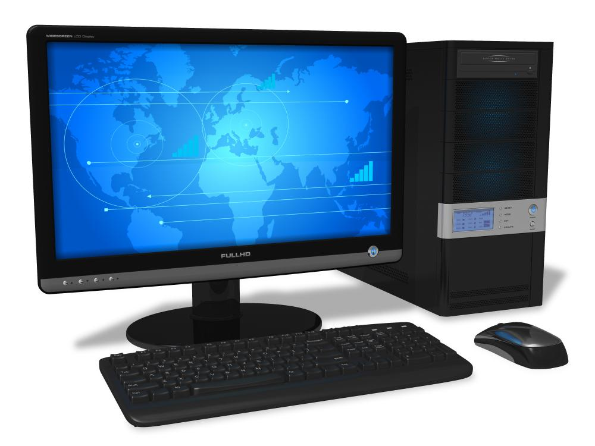
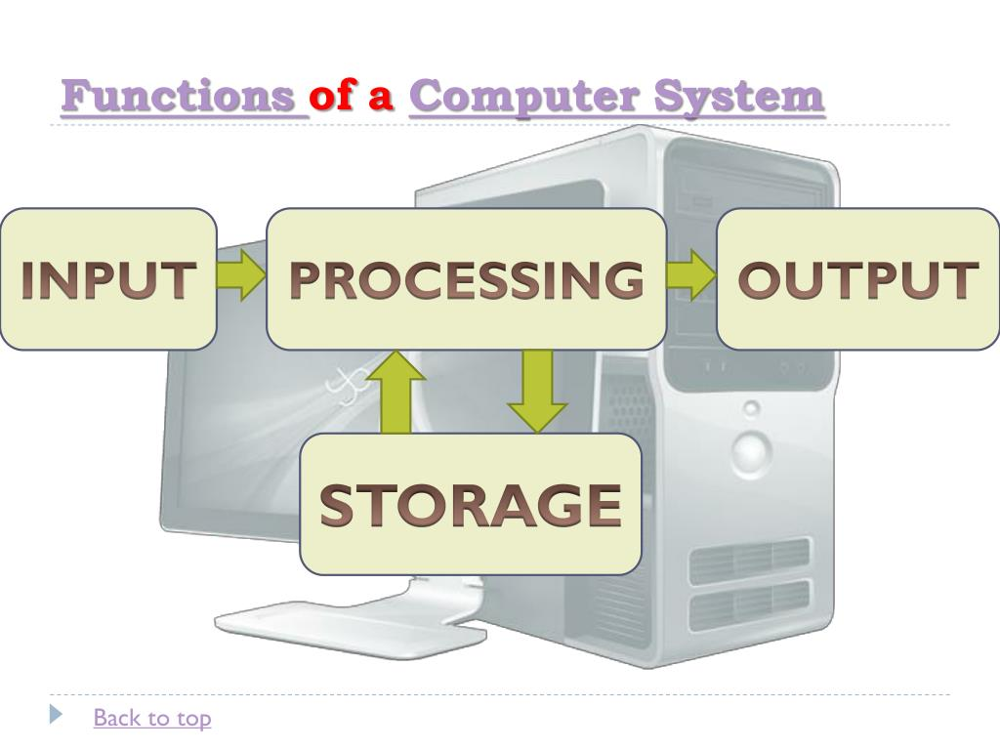

Introduction
A computer is an electronic device that can be programmed to perform various tasks. It is also known as Information Processing Machine. A computer system is a collection of hardware and software that performs specific tasks. The term “system” refers to the interconnection of individual components, which work together to perform an overall task or set of tasks. Computer systems will include the computer along with any software and peripheral devices that are necessary to make the computer function.
Feature of computer
There are various types of features of computer which makes it convienent to use. Some of its feature are listed below:
Such qualities of a computer that make it different from other electronic machines. These properties of a computer are called computer characteristics. Computers are used in many areas of our daily life, such as - Education, Business, Entertainment, Home, Office, etc. Computers have made our lives easier & more convenient.
Function of a computer
Taking data and instructions from a user, processing the data as per instructions, and displaying or storing the processed data, are the four major functions of a computer. These functions are also known as the input function, process function, output function, and storage function, respectively. This is the major function of computer.
The only purpose of this web page is to tell you about computers in very simple language. If you think this web page can be improved further then you can give us feedback here: